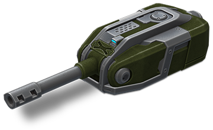
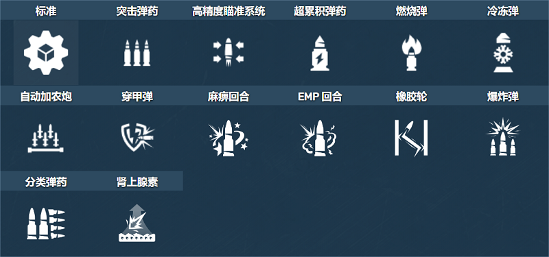
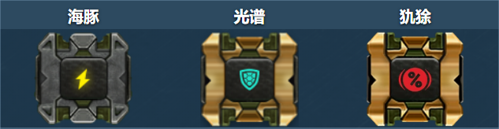
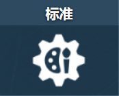
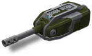
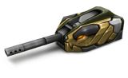

概括
每个玩家都拥有它，即使它只是 Mk1 的改装，只能擅长在车库中收集灰尘。
与合法军用车辆上使用的炮塔最相似的炮塔，
轰天炮是您的基本豌豆射手：点击空格键，放开一枪，稍等片刻重新加载，冲洗，重复。
偶尔在射击时，一枚炮弹撞击另一辆坦克会产生一团火花和放电，表示“致命一击”
——这种射击造成的伤害比典型的子弹要大得多，并且保持在一定的数值。
这意味着一旦超过最大或最小范围，重击的伤害就不会减少。
这些主要是偶然发生的，但众所周知，它会在每次击中目标时填充基于百分比的仪表。
车库中的描述
中程炮塔。可以随机增加伤害。快速装弹的通用武器。
传奇的坦克炮塔，因其价格实惠且易于维护而广受欢迎。
将它安装在一个快速的底盘上，并在震惊的敌人之间滑行，
当你一个接一个地摧毁每个笨重的重型坦克时。
请记住，这个炮塔的伤害会根据与目标的距离而下降，在这种情况下，炮塔的有效载荷具有高爆弹，在任何距离都有效。
到目前为止，还没有机械师能够将子弹正确地装入机械装置中。
正因为如此，每次玩家开火时，不可能知道将使用哪一发子弹，
但另一方面，玩家的敌人也不知道什么时候从远处击中了一个巨大的惊喜。
装备改造

防御模块

射击效果

皮肤

轰天炮标准

轰天炮 XT